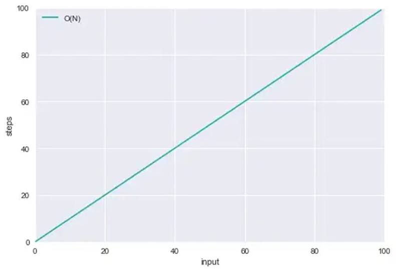

Lesson 1 : Introduction to Data Structure
The term "data structure" is used to describe the way data is stored and the term "algorithm" is used to describe the way data is processed. Data structures and algorithms are interrelated. Choosing a data structure affects the kind of algorithm you might use, and choosing an algorithm affects the data structures we use.
An algorithm is a finite sequence of instructions, each of which has a precise meaning and can be performed with a limited amount of effort in a finite length of time. No matter what the input values may be, an algorithm terminates after executing a finite number of instructions.
A data structure is a representation of a logical relationship existing between individual elements of data. In other words, a data structure defines a way of organizing all data items that consider not only the elements stored but also their relationship to each other. The term "data structure" is used to describe the way data is stored.
To develop a program for an algorithm, we should select an appropriate data structure for that algorithm.
Therefore, the data structure is represented as:
Algorithm + data structure = program
Linear Data Structure
A data structure is said to be linear if its elements form a sequence or a linear list. Linear data structures like arrays, stacks, queues, and linked lists organize data in linear order.
Non-Linear Data Structure
A data structure is said to be non-linear if its elements form a hierarchical classification where data items appear at various levels. Trees and graphs are widely used non-linear data structures. Tree and graph structures represent hierarchical relationships between individual data elements. Graphs are nothing but trees with certain restrictions removed.
- Data structures are divided into two types:
- Primitive data structures
- data structures
Primitive Data Structures
Primitive data structures are the basic data structures that directly operate on machine instructions. They have different representations on different computers. Integers, floating point numbers, character constants, string constants, and pointers come under this category
Non-primitive data structures
Non-primitive data structures are more complicated data structures and are derived from primitive data structures. They emphasize grouping the same or different data items with a relationship between each data item. Arrays, lists, and files come under this category.
Abstract Data Type
An abstract data type, sometimes abbreviated ADT, is a logical description of how we view the data and the operations allowed without regard to how they will be implemented. This means that we are concerned only with what the data represents and not with how it will eventually be constructed. By providing this level of abstraction, we are creating an encapsulation around the data. The idea is that by encapsulating the details of the implementation, we are hiding them from the user’s view. This is called "information hiding." The implementation of an abstract data type, often referred to as a "data structure," will require that we provide a physical view of the data using some collection of programming constructs and primitive data types.

Algorithm
An algorithm is a finite sequence of instructions, each of which has a precise meaning and can be performed with a limited amount of effort in a finite length of time. No matter what the input values may be, an algorithm terminates after executing a finite number of instructions.
In addition, every algorithm must satisfy the following criteria:
Input: there are zero or more quantities, which are externally supplied;
Output: at least one quantity is produced;
Definiteness: each instruction must be unambiguous;
Finiteness: if we trace out the instructions of an algorithm, then in all cases, the algorithm will
terminate after a finite number of steps;
Effectiveness: every instruction must be sufficiently basic that it can in principle be carried out by a
person using only pencil and paper. It is not enough that each operation be definite; it must also be
feasible.
Algorithm Analysis
The efficiency of an algorithm can be analyzed at two different stages, before implementation, and after implementation. They are the following:
Algorithm Complexity
Suppose X is an algorithm and n is the size of the input data, the time and space used by the algorithm X are the two main factors, which decide the efficiency of X.
Time Complexity:
The amount of time required for an algorithm to complete its execution is its time complexity. An algorithm is said to be efficient if it takes the minimum (reasonable) amount of time to complete its execution.
Space Complexity:
The amount of space occupied by an algorithm is known as Space Complexity. An algorithm is said to be efficient if it occupies less space and required the minimum amount of time to complete its execution.
The complexity of an algorithm f(n) gives the running time and/or the storage space required by the algorithm in terms of n as the size of input data.
Growth of Functions
(Asymptotic Analysis)
How to analyze an Algorithm
Let us form an algorithm for Insertion sort.
Pseudo code: Longest time
for j=1 to A[max]----------------------------------------------n-1
key=A[j]----------------------------------------------1
//Insert A[j] into sorted Array A[1.....j-1]------------0
i=j-1-----------------------------------------------------------1
while i>=0 & A[i]>key-----------------------------------n
A[i+1]=A[i]----------------------------------------------1
i=i-1----------------------------------------------------1
A[i+1]=key----------------------------------------------1
Best case:
It occurs when Array is sorted.
T(n) = (n-1)(1+0+1+1)
Worst case:
It occurs when Array is reverse sorted.
T(n) = ((n-1)(1+0+1))(n(1+1+1))
Why do we concentrate on worst-case running time?
Order of Growth
Example: We found out that for insertion sort the worst-case running time is of the form
T(n) = ((n-1)(1+0+1))(n(1+1+1))
= ((n-1)(2))(3n)
=(2n-2)(3n)
=6n2-6n
Drop lower-order terms, constant coefficients, and constants. What remains is n2.
Asymptotic Notation
Big O Notation
O(1) - Constant
O(1) describes an algorithm that will always execute at the same time (or space) regardless of the size of the input data set.
Example:
bool IsFirstElementNull(IList
{
return elements[0] == null;
}
O(n) - Linear
An algorithm that is O(N) will take as many steps as there are elements of data. So when an array increases in size by one element, an O(N) algorithm will increase by one step.
Example:
bool IsFirstElementNull(IList
{

for each(var element in elements)
{
if (element == value) return true;
}
}
return false;
}
O(2^N) - Exponential
Example:
int Fib(int number)
{
if (number <= 1) return number;
return Fib(number - 2) + Fib(number - 1);
}
O(logN) - Logarithmic
Example:
f(int n)
{
for (i = 1; i < n; i=i*2) ------------------O(log n)
printf("%d", i); -----------------O(1)
}

GENERAL GUIDELINES FOR TIME REQUIREMENT ANALYSIS
Loops
The running time for a loop is at most the running time of the statements inside the loop multiplied by the number of iterations
for (i=0; i<=n; ++i)--------------------------------O(n)
{
sum = sum + i*10; -----------O(1)
printf(“sum is %d”, sum);---O(1)
}
Running time = (O(1)+O(1)).O(n) = O(n)
Nested Loops
i = 1;
while (i < n){---------------------------------------------------O(n)
for (k=0; k < m; ++k)---------------------O(n)
++j; ---------------- O(1)
++i; ---------------- O(1)
Running time = O(n).O(n) = O(n^2)
Consecutive Statements
The statement with the largest time complexity counts.
for (j=0; j<=n; ++j) --------------O(n)
balance[I] = 0; --------------O(1)
for (i=0; i<=n; ++i) --------------O(n)
for (k=0; k<=n; ++k) -----------O(n)
member[j,k] = rate[j,k] + increase; -----O(1)
Since the largest time complexity is O(n^2), then it is the time complexity for the statements above.
If/Else
The running time of an if/else statement is never more than the running time of the test plus the larger running times of statement1 and statement2.
if (n <= 1) ------------------------------ O(1)
return 1; --------------------- O(1)
else
return n+ 1; ---------------O(1)
Running time = O(1) + O(1) = O(1)
The algorithm that employs divide and conquer method
These algorithms usually have time complexities of O(n log n). An algorithm is O(n log n) if it takes O(1) time to cut the problem size by a fraction. On the other hand, if constant time is required to merely reduce the problem by a constant amount, then the algorithm is really just an O(n).